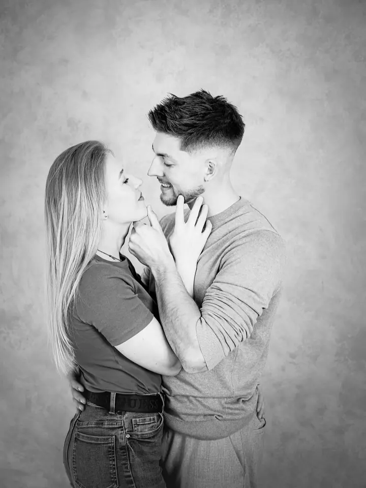

Jmenuji se Lenka Peterková a fotím portréty žen, rodiny, maminky s bříškem i svatby. Většina focení probíhá v mém Off White studiu v Říčanech u Prahy, kde pracuji s přirozeným světlem, a když je hezky, vyrazíme i na zahradu za ateliérem.
Portrétní, rodinná a svatební fotografkaŘíčany · Praha a okolíPortrétní, rodinná a svatební fotografkaŘíčany · Praha a okolíPortrétní, rodinná a svatební fotografkaŘíčany · Praha a okolíPortrétní, rodinná a svatební fotografkaŘíčany · Praha a okolíPortrétní, rodinná a svatební fotografkaŘíčany · Praha a okolíPortrétní, rodinná a svatební fotografkaŘíčany · Praha a okolíPortrétní, rodinná a svatební fotografkaŘíčany · Praha a okolíPortrétní, rodinná a svatební fotografkaŘíčany · Praha a okolí

Moje slovo
„Nemusíte mít obavy, pokud si nevíte rady s pózováním, se vším Vám ráda poradím a nasměřuji Vás.“
— Lenka Peterková
Co fotím
Portréty pro ženy a business
Krátký pracovní portrét pro web, média nebo životopis, nebo delší osobní portrét, u kterého je víc prostoru pro kreativitu. Poradím vám s outfitem i stylizací a fotit můžeme v ateliéru, venku nebo na zahradě za ateliérem.
Rodina a děti
Focení trvá 60 až 90 minut v ateliéru, na zahradě nebo kombinovaně, v pohodové atmosféře a na přirozeném světle. S pózováním vám ráda pomůžu.
Těhotenství a newborn
Jemné těhotenské fotky v ateliéru nebo venku a první dny miminka. Newborn focení vyžaduje víc času, a tak na něj nespěcháme. Obojí můžete spojit v duo balíčku.
Svatby
Svatební den fotím s láskou a citem, v přirozeném světle a s ohledem na vaši osobnost. Můžete si vybrat jen obřad a portréty, nebo celý den až po první tanec, s jedním nebo se dvěma fotografy.
Poslední momenty
Ahoj, jsem Lenka
Nejraději fotím ženy. Ty, které se před objektivem necítí jistě, i ty, které potřebují fotky pro svou práci. Při focení se snažím ukázat, co na sobě možná sama nevidíte, a stavím přitom na empatii a přirozenosti.
Můj ateliér je v Říčanech u Prahy. Je světlý, laděný do bílé a béžové a hned za ním je vzrostlá zahrada, takže během jednoho focení můžeme vystřídat ateliér i venkovní scény. Fotím hlavně v přirozeném světle a nehoním dokonalé pózy. Když si nevíte rady, vždycky vám poradím a nasměruji vás.
Kromě portrétů fotím rodiny, děti, těhotenství a novorozence a ráda vyrážím i na svatby. Na portréty a boudoir s vámi může přijít i naše dvorní vizážistka, abyste se na focení mohla jen těšit.
Mám Off White studio v Říčanech
Za ateliérem máme zahradu
Fotím hlavně v přirozeném světle
Spolupracuji s dvorní vizážistkou
Vedu také fotokurzy
Jak to probíhá
01
Domluva termínu
Zavolejte mi nebo napište a společně vybereme balíček, který odpovídá tomu, k čemu fotky potřebujete. Do ateliéru je potřeba se objednat předem.
02
Příprava a outfit
Poradím vám, co si vzít na sebe, ideálně dva jednodušší nadčasové outfity bez potisku. U portrétu nechybí ani stylizace a lehké zmatnění pleti pudrem.
03
Focení
Fotíme v klidu v ateliéru, venku nebo na zahradě za ateliérem. Celou dobu vás vedu, takže nemusíte umět pózovat.
04
Výběr a retuš
Náhledy najdete v soukromé online galerii, vyberete si své oblíbené fotky a já je pro vás upravím a vyretušuji v tiskové kvalitě.
Časté otázky
Neumím pózovat, nevadí to?
Vůbec ne. Během focení vám se vším poradím a nasměruji vás, aby fotky působily přirozeně.
Co si mám vzít na sebe?
Nejlépe aspoň dva outfity v oblíbených barvách bez potisku a nápisů, třeba košili a džíny nebo šaty. U rodinného focení je dobré, když k sobě oblečení všech ladí, ideálně ve světlejších tónech.
Kolik stojí portrét nebo rodinné focení?
Pracovní portrét (cca 20 minut, 3 retušované fotografie) stojí 2 500 Kč, osobní portrét s 10 fotografiemi 3 900 Kč a rodinné focení (60 až 90 minut, 12 fotografií) 4 300 Kč.
Můžu focení někomu darovat?
Ano, focení můžete věnovat jako dárkový poukaz. Osobní portrét i rodinné focení jsou oblíbeným dárkem.